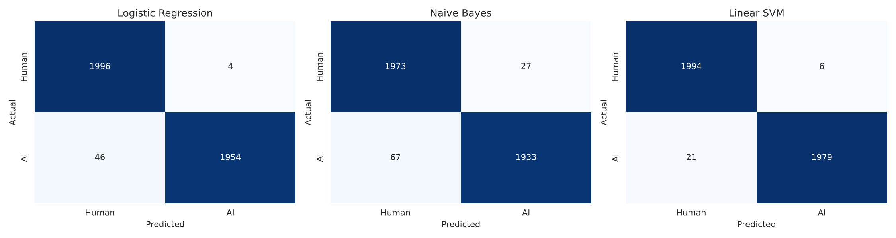
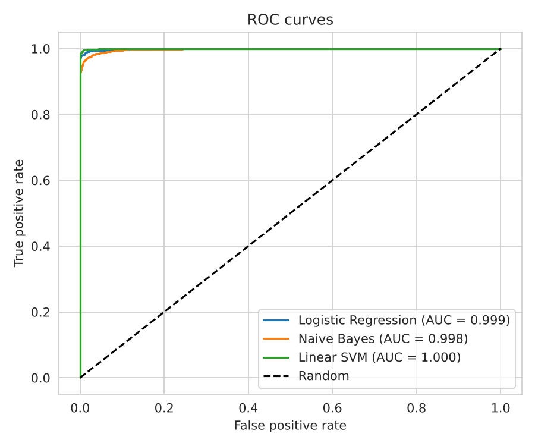

Is this text written by AI?
Paste an essay to estimate whether it was written by a person or generated by an AI model.
Estimated probability of AI authorship
Text with influential words marked
This text is short. The model works best on essays of about 100 words or more.
The model is a linear support vector machine trained on TF-IDF word features from the DAIGT V2 dataset, where it reached an F1-score of 0.993 on held-out essays. On text from other sources or topics it can be less accurate. The result is a probability estimate, not proof of authorship.
Model performance
Three classifiers were trained on the same TF-IDF features and compared on 4,000 held-out essays.
- Dataset
- DAIGT V2 Train Dataset, balanced to 20,000 essays (10,000 human, 10,000 AI)
- Split
- 16,000 training and 4,000 test essays, stratified, seed 42
- Features
- TF-IDF, words and word pairs, up to 50,000 features
Test results
| Model | Accuracy | Precision | Recall | F1 | ROC-AUC |
|---|---|---|---|---|---|
| Majority baseline | 0.5000 | 0.0000 | 0.0000 | 0.0000 | 0.5000 |
| Logistic Regression | 0.9875 | 0.9980 | 0.9770 | 0.9874 | 0.9988 |
| Naive Bayes | 0.9765 | 0.9862 | 0.9665 | 0.9763 | 0.9978 |
| Linear SVM (used here) | 0.9932 | 0.9970 | 0.9895 | 0.9932 | 0.9997 |


These scores come from one benchmark. The most influential words partly reflect topics and writing style of the dataset, so accuracy on text from other sources can be lower.